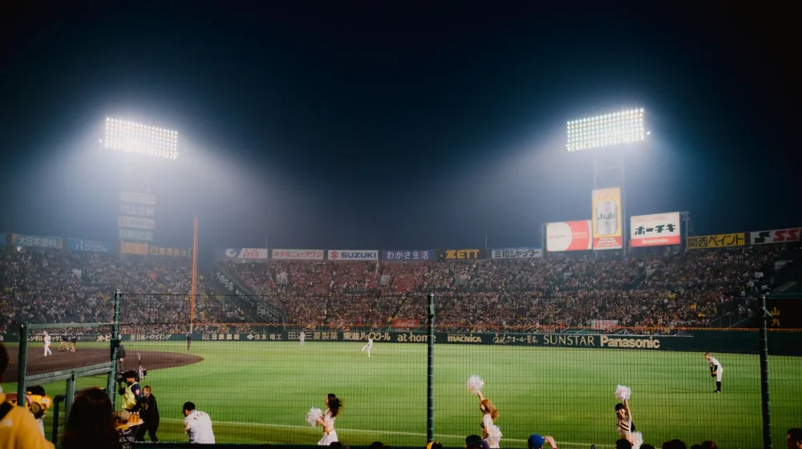

KT 대 NC, 단순한 경기가 아니다? 대한민국을 들썩인 0.001%의 드라마!
사진: Francisco Sanchez / Pexels (무료 이미지, 출처 표기)
혹시 어제 밤, 대한민국 인터넷을 뜨겁게 달군 'KT 대 NC'라는 검색어에 대해 들어보셨나요?

평범한 프로야구 경기 이름 같지만, 이 두 팀의 이름이 검색어 순위 최상단에 오르며 수많은 사람들을 잠 못 이루게 했다는 사실! 과연 그 이면에는 어떤 예측 불허의 드라마가 숨어 있었을까요? 단순한 승패를 넘어선 기적 같은 순간과 숨겨진 이야기가 지금부터 펼쳐집니다. 채널 고정!
평범한 경기가 아니었다: 왜 모두가 'KT 대 NC'에 열광했나?
프로야구 시즌 중 수많은 경기가 열리지만, 유독 특정 경기가 폭발적인 관심을 받는 데는 그만한 이유가 있습니다. 어제의 'KT 대 NC'전 역시 마찬가지였죠. 이 경기는 단순한 정규 시즌 한 경기가 아니었습니다. 두 팀 모두에게 플레이오프 진출의 향방을 가를 수 있는, 그야말로 '외나무다리' 승부였기 때문입니다. KT 위즈는 연승으로 기세를 타며 기적 같은 가을 야구를 꿈꾸고 있었고, NC 다이노스는 한 자릿수 게임 차로 뒤쫓아오는 팀들의 압박 속에서 승리 굳히기가 절실했습니다. 한 팀에게는 희망의 불씨를, 다른 팀에게는 안정적인 미래를 약속할 수 있는 그야말로 '운명'의 대결이었던 것이죠. 팬들은 경기 시작 전부터 숨죽이며 이 치열한 싸움의 결과를 기다리고 있었습니다. 이미 이때부터 단순한 경기가 아닐 것이라는 직감이 모두의 마음속에 있었을 겁니다.
손에 땀을 쥐게 한 명승부의 서막: 예측 불허의 전개
경기 초반부터 분위기는 심상치 않았습니다. NC 다이노스가 초반부터 맹공을 퍼부으며 리드를 잡았고, KT 위즈는 좀처럼 기회를 잡지 못하며 끌려가는 양상이었습니다. 전문가들은 물론, 대부분의 팬들은 NC의 무난한 승리를 점치는 분위기였죠. 하지만 야구는 9회 말 투아웃부터라는 말이 있지 않습니까? 경기는 중반을 넘어 후반으로 갈수록 그야말로 드라마틱한 반전을 거듭했습니다. KT 타선이 서서히 불붙기 시작하며 추격의 고삐를 당겼고, NC는 필사적으로 리드를 지키려 했죠. 투수들은 혼신의 역투를 펼쳤고, 타자들은 한 점 한 점을 만들어내기 위해 모든 것을 걸었습니다. 말 그대로 '한 치 앞을 알 수 없는' 예측 불허의 명승부가 눈앞에서 펼쳐졌던 것입니다.
데이터도 배신한 반전 드라마: 0.001%의 기적을 쓰다!
경기는 9회말, 마지막 공격까지 이어졌습니다. 이때까지도 KT 위즈는 1점 차로 뒤지고 있었고, 투아웃 상황에서 주자 한 명만이 출루해 있는 절체절명의 위기였습니다. 승리 확률은 통계적으로 0.001% 미만이라고 해도 과언이 아닐 정도로 희박했습니다. 이 정도면 대부분의 팬들은 이미 패배를 직감하고 TV를 껐을지도 모릅니다. 하지만, 그 순간, 거짓말처럼 기적이 일어났습니다! 대타로 나선 선수가 침착하게 안타를 쳐내며 동점을 만들었고, 이어지는 타자가 끝내기 홈런을 터뜨리며 경기는 KT 위즈의 극적인 역전승으로 마무리되었습니다. 이 0.001%의 확률을 뒤엎은 경이로운 역전 드라마에 중계진은 물론, 경기장을 찾은 팬들은 물론이고 안방에서 지켜보던 시청자들까지 모두가 경악과 환호성을 동시에 터뜨렸습니다. 포기하지 않는 정신이 만들어낸, 마치 영화 같은 순간이었죠!
극적인 승리의 순간들 (경기 후반부)
그라운드 너머의 숨은 영웅들: 기록과 비하인드 스토리
이날 경기가 단순한 역전승을 넘어선 감동을 선사한 데는 여러 숨은 이야기들이 있었습니다. 결승타를 친 선수에게는 그동안의 부진을 씻어내는 짜릿한 한 방이었고, 경기 내내 끈질기게 버텨준 불펜 투수들의 투혼도 빛을 발했습니다. 특히 KT 위즈는 최근 연패의 늪에 빠져 힘든 시간을 보내고 있었기에, 이날의 승리는 선수단 전체에게 엄청난 사기 진작 효과를 가져다주었죠. NC 다이노스 선수들 역시 최선을 다했지만, 아쉽게 패배의 쓴맛을 보며 다음 경기에 대한 결의를 다지게 되었습니다. 이처럼 한 경기 안에서도 수많은 선수들의 희로애락이 교차하며 팬들에게 잊지 못할 스토리를 선물했습니다. 경기 후 양 팀 감독의 인터뷰에서도 승패를 넘어선 진한 감동과 다음 경기에 대한 각오가 묻어나왔습니다.
승패를 넘어선 감동과 여운: 스포츠가 주는 진짜 메시지
이날 'KT 대 NC' 경기가 남긴 여운은 단순히 승패의 결과를 넘어섭니다. 포기하지 않는 끈기와 노력, 그리고 마지막 순간까지 최선을 다하는 스포츠 정신이 얼마나 위대한지를 여실히 보여주었기 때문입니다. 이 경기를 통해 많은 사람들이 삶의 어떤 어려운 순간에도 희망을 잃지 말아야 한다는 메시지를 얻었을 것입니다. 또한, 패배한 팀에게도 다음 기회가 있다는 것을 상기시켜주며, 스포츠가 주는 아름다운 도전과 좌절, 그리고 성장의 스토리를 다시 한번 깨닫게 해주었습니다. 검색어 순위를 뜨겁게 달군 이유도 바로 여기에 있을 겁니다. 우리 모두에게 필요한 짜릿한 희망과 감동을 선사했으니까요.
앞으로의 행보: KT와 NC, 그리고 KBO 리그의 불꽃 튀는 미래
이날의 극적인 승리로 KT 위즈는 가을 야구를 향한 꿈을 이어갈 수 있게 되었습니다. 반면, NC 다이노스는 아쉽게 승리를 놓쳤지만, 여전히 상위권 경쟁에서 중요한 위치를 차지하고 있습니다. 이제 KBO 리그는 더욱 뜨거운 순위 싸움에 돌입할 것입니다. 한 경기의 결과가 다음 경기에, 그리고 시즌 전체에 어떤 영향을 미칠지 아무도 예측할 수 없습니다. 어제의 'KT 대 NC' 경기처럼, 앞으로도 우리를 전율하게 할 수많은 드라마들이 펼쳐질 것입니다. 야구 팬이라면 이들의 남은 경기를 더욱 흥미진진하게 지켜볼 수밖에 없을 겁니다. 과연 어떤 팀이 최종 승자가 되어 영광을 차지할지, 앞으로의 KBO 리그에 더욱 주목해주세요!
🔗 이 글도 함께 보면 좋아요: 이번 주말 볼거리 추천: OTT 영화, 드라마, 다큐 정주행 가이드